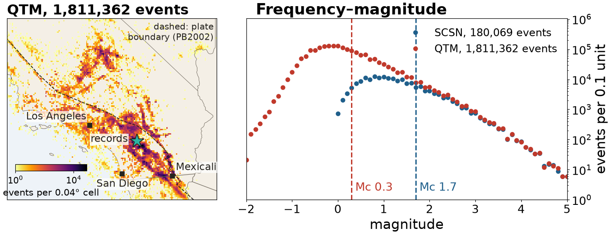
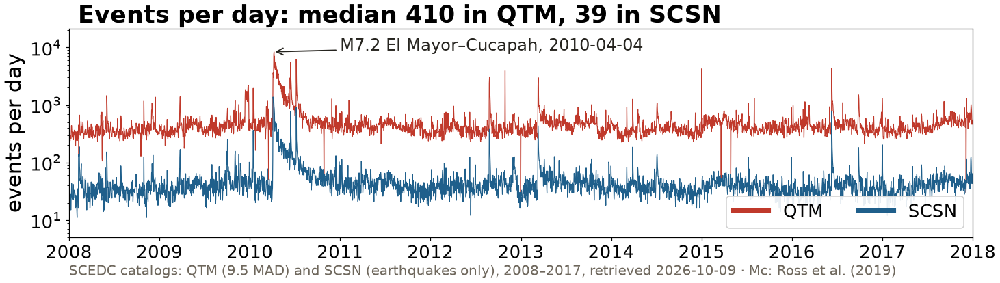
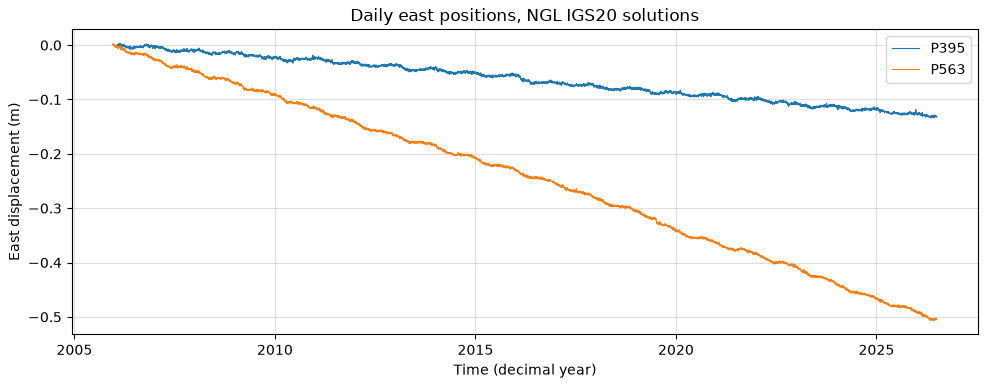
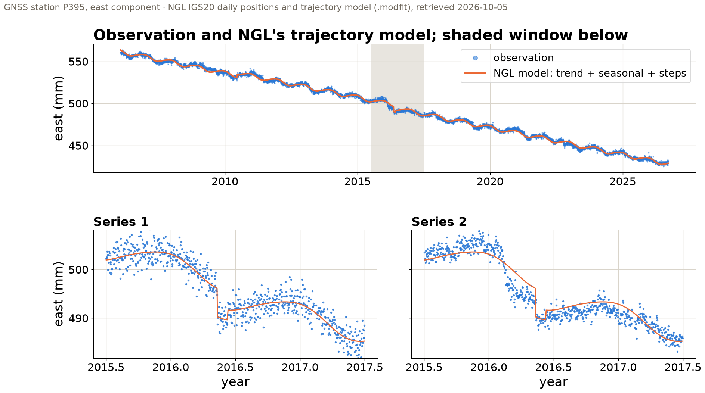
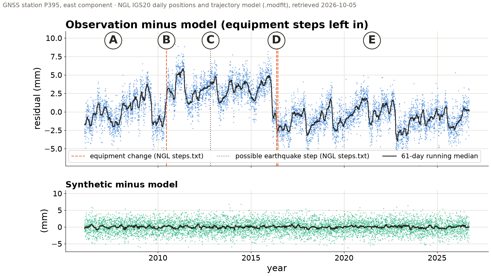

Why machine learning
in the geosciences
Session 1 · Wed Sep 30 · Book section 1.1
🌋
Today’s question
An AI assistant can draft a working analysis in minutes.
What is left that only the scientist can do?
Reading: 1.1 Open reproducible science
Literature example: Southern California earthquakes
🗂️ Catalog 🪨 Solid Earth 📈 Seismology
Template matching on ten years (2008–2017) of Southern California Seismic Network waveforms found 1.81 million earthquakes, ten times the network’s catalog, and lowered the magnitude of completeness from 1.7 to 0.3.
Ross, Trugman, Hauksson & Shearer (2019). Science, 364, 767–771.
One data sample is one earthquake (QTM, 2008-01-01 UTC)
| time | lat | lon | depth km | M | template | CC |
|---|---|---|---|---|---|---|
| 05:11:50.84 | 33.618 | −116.663 | 13.4 | −0.10 | 10297553 | 0.31 |
| 05:11:57.89 | 33.618 | −116.664 | 13.4 | 0.29 | 10297553 | 0.59 |
| 05:12:03.07 | 33.618 | −116.665 | 13.5 | 0.29 | 10297553 | 0.28 |
| 05:12:06.32 | 33.618 | −116.664 | 13.4 | 0.82 | 10297553 | 1.00 |
| 05:12:09.71 | 33.618 | −116.663 | 13.4 | 0.50 | 37643512 | 0.23 |
Bold: the SCSN event whose waveforms are the template. Same place, 04:50–05:50: 16 events in QTM, 3 in SCSN.


Same waveforms, 2008–2017: 1,811,362 events in QTM and 180,069 in the SCSN catalog, a median of 410 events per day against 39.
Machine learning results in other Earth systems
90% of 1,380
Atmosphere. A graph neural network trained on reanalysis outperforms the best operational deterministic forecast on 90% of 1,380 verification targets; a 10-day forecast takes under a minute.
Lam, R., et al. (2023). Learning skillful medium-range global weather forecasting. Science, 382, 1416–1421.
1.5 years
Ocean. A convolutional network trained on climate simulations, then on reanalysis, forecasts El Niño with skill up to one and a half years ahead.
Ham, Y.-G., Kim, J.-H., & Luo, J.-J. (2019). Deep learning for multi-year ENSO forecasts. Nature, 573, 568–572.
5 days
Land water. In ungauged watersheds, a model trained on gauged ones predicts extreme floods 5 days ahead as reliably as the global flood system’s same-day nowcast.
Nearing, G., et al. (2024). Global prediction of extreme floods in ungauged watersheds. Nature, 627, 559–563.
2 vs 13,451
Solid Earth. A logistic regression with 2 parameters matches the aftershock-location skill of a deep network with 13,451.
Mignan, A., & Broccardo, M. (2019). One neuron versus deep learning in aftershock prediction. Nature, 574, E1–E3.
Reading-arc anchors: Bergen et al. (2019, Science) on solid-Earth geoscience; Karpatne et al. (2019, IEEE TKDE) on why geoscience data resist off-the-shelf methods.
Three forecasts match or beat physics-based systems; in the fourth case a 2-parameter regression matched a 13,451-parameter network.
Daily positions at GNSS stations P395 and P563
📍 In-situ sensor 🪨 Solid Earth 📐 Geodesy


Each point is the station’s daily east position, measured to a few millimeters. In this global frame both stations drift west, and 12 to 13 mm/yr of that drift is the North America plate itself. What remains is deformation at the plate boundary (map arrows, relative to stable North America): the Oregon coast at P395 is pushed landward while the Cascadia megathrust is locked, and P563 is carried northwest in the shear zone between the Pacific and North America plates.
P563 drifts west at 23.5 mm/yr in the global frame; 11.6 mm/yr of that is the North America plate.
P395 east position: the record and a synthetic copy
📍 In-situ sensor 🪨 Solid Earth 📐 Geodesy

One of Series 1 and 2 is the station; the other is NGL’s model plus independent random noise of the same size. Which is synthetic, and what gives it away?
Series 1 is synthetic. The real record wanders for weeks at a time, and its 2016 drop starts in January, months before the step the model places at the antenna change.
Measurement error or model error?
📍 In-situ sensor 🪨 Solid Earth 📐 Geodesy

For each letter, vote: measurement or processing error, physics the model leaves out, or cannot tell yet.
What the residual contains
| Feature | Most likely cause | Evidence | |
|---|---|---|---|
| A | day-to-day scatter, 1.8 mm RMS | measurement | receiver noise, multipath, and atmospheric delay; same size as the synthetic noise |
| B | +3.0 mm step, June 2010 | measurement system | antenna change in the station log; an antenna shifts the measured phase center, not the ground |
| C | nothing, October 2012 | physics hypothesis rejected | catalogue flags a possible step from an M7.8 earthquake 1,051 km away (USGS usp000juhz); NGL’s estimate is 0.1 ± 0.08 mm |
| D | −5.9 and +2.0 mm, May–June 2016 | both, or cannot tell | antenna and receiver changes, but the decline begins months earlier |
| E | wander of several mm over months | model error and correlated noise | absent from the synthetic: seasonal loading that changes from year to year, possible transient deformation, noise correlated in time |
P395’s residual holds 1.8 mm RMS daily scatter, equipment steps of +3.0 and −5.9 mm, and months-long wander that the synthetic series lacks.
Where could machine learning reduce the error?
| Residual feature | A data-driven approach | Where in the course |
|---|---|---|
| A · daily scatter | estimate the error shared by nearby stations and remove it | 2.9 repairing records, Fri Oct 16 |
| B, D · instrument steps | detect offsets and classify them as equipment or ground motion | 2.9; 3.4 rare-event detection, Fri Oct 30 |
| C · catalogue flags | learn which flagged earthquakes produce measurable steps | 3.4 imbalanced classification |
| E · correlated wander | predict the residual from hydrology covariates (rain, snow, soil moisture); group similar transients across stations | 2.11 features, Mon Oct 19; 3.3 clustering, Wed Oct 28; 3.7 forests, Fri Nov 6 |
Before trusting any of these: how would you know it worked?
Add signals of known size to synthetic series and check that the method recovers them: section 2.10, Mon Oct 19.
Each residual feature has a candidate method later in the course, and each method is first tested on synthetic series with signals of known size (2.10).
Four uses of machine learning in the geosciences
- Automation: detect and catalog events in continuous records
- Discovery: find structure nobody labeled, in data too large to read whole
- Emulation: replace an expensive physical simulation with a fast surrogate
- Forecasting: predict the next value, with its uncertainty
Signal processing (denoising, gap filling) is a fifth use, grouped here with automation. Matching the method to the question is learning outcome 1.
Today’s papers cover three uses: detection (QTM, 10 times the cataloged events), emulation (GraphCast, a 10-day forecast in under a minute), forecasting (floods 5 days ahead).
Geoscience: the systems we study
The geosciences study Earth and other planetary bodies as coupled physical, chemical, and biological systems: their materials, the processes that move mass and energy between them, and the history those materials record, over timescales from seconds to billions of years.
| System | What it includes | Processes studied |
|---|---|---|
| 🪨 Solid Earth | crust, mantle, core | plate motion, earthquakes, volcanism, landscape evolution |
| 🌊 Ocean | water column, seafloor | circulation, heat and carbon uptake, waves, sea level |
| 💧 Land water | rivers, lakes, soil, groundwater, snowpack | runoff, infiltration, evapotranspiration, floods, droughts |
| 🌤️ Atmosphere | the air column, surface to upper atmosphere | weather, climate, transport of heat, water, and aerosols |
| 🧊 Cryosphere | glaciers, ice sheets, sea ice, permafrost | ice flow, melt, contribution to sea level |
| 🌱 Biosphere | ecosystems on land and in the ocean | exchange of carbon, water, and energy with the other systems |
| 🪐 Planets & exoplanets | bodies in and beyond the Solar System | interiors, surfaces, atmospheres, habitability |
The systems exchange mass and energy, so most research questions, and most course datasets, involve more than one of them.
Disciplines and the systems they study
| Discipline | Main systems | Typical data |
|---|---|---|
| 📈 Seismology | 🪨 Solid Earth | seismic waveforms, earthquake catalogs |
| 📐 Geodesy | 🪨 Solid Earth 🧊 Cryosphere 💧 Land water | GNSS positions, InSAR, gravity |
| 🌋 Volcanology | 🪨 Solid Earth 🌤️ Atmosphere | seismicity, deformation, gas and thermal emission |
| ⛰️ Geology & geomorphology | 🪨 Solid Earth | maps, samples, topography |
| 💧 Hydrology & land-surface modeling | 💧 Land water 🌱 Biosphere | stream gauges, soil moisture, land-surface model output |
| 🌊 Oceanography | 🌊 Ocean | floats, moorings, satellite altimetry |
| 🌡️ Atmospheric & climate science | 🌤️ Atmosphere | weather stations, reanalyses, climate models |
| 🧊 Glaciology | 🧊 Cryosphere | ice velocity, altimetry, ice cores |
| 🦠 Biogeosciences | 🌱 Biosphere | flux towers, ocean color |
| 🪐 Planetary science & astrobiology | 🪐 Planets & exoplanets | spacecraft and telescope observations, exoplanet spectra |
A discipline is a community of questions and methods; a single project usually draws on more than one.
Data sources, and how course datasets are labeled
| Source | What it is | Examples |
|---|---|---|
| 📍 In-situ sensor | an instrument that measures where it sits | seismometer, GNSS receiver, stream gauge, float, weather station |
| 🛰️ Satellite & airborne | remote sensing from orbit or aircraft | InSAR, optical imagery, altimetry, gravity |
| 🔭 Telescope | observation of other planetary bodies and stars | light curves, spectra |
| 🖥️ Model & simulation | numerical solution of physical equations | climate and land-surface models, reanalyses, synthetic data |
| 🗂️ Catalog & compiled product | records derived from other data | earthquake catalogs, velocity fields, gridded compilations |
| 🧪 Sample & laboratory | measurements on physical material | rock, water, and ice-core analyses |
Each dataset carries three labels. The GNSS stations on the earlier slide: 📍 In-situ sensor 🪨 Solid Earth 📐 Geodesy
Earth systems, data modalities, and first ML tasks
| Earth system | Data modalities | Plausible first ML tasks |
|---|---|---|
| 🪨 Solid Earth | waveforms, catalogs, GNSS and InSAR time series | detect events, estimate trends, invert parameters |
| 🌊 Ocean | profiles, trajectories, moorings, altimetry grids | discover regimes, forecast states |
| 💧 Land water | station records, terrain, soil moisture, model output | forecast flow, map susceptibility, emulate models |
| 🌤️ Atmosphere | gridded fields, station series, ensembles | forecast, emulate simulations, quantify extremes |
| 🧊 Cryosphere | imagery, altimetry, point clouds | segment features, detect change |
| 🌱 Biosphere | flux-tower series, ocean color, imagery | classify surfaces, model fluxes |
| 🪐 Planets & exoplanets | light curves, spectra, spacecraft imagery | detect transits, classify spectra and surfaces |
Choose a system, a discipline, and the data source you expect to use, then a first task. The next slide records it.
Your three labels (source, system, discipline) and one first task are what you enter on the next slide.
Add your project idea
Each entry records one question, one data source you can obtain, and one first task; the method can change later.
Class project ideas, grouped by ML task
Projects that share a data modality or a task can share code and validation design, even across Earth systems.
Three pillars and the agentic-AI thread
| Pillar | Where | You leave able to |
|---|---|---|
| AI-ready data | Chapter 2 | turn a raw sensor stream into a data set a model can learn from |
| Classic machine learning | Chapter 3 | train feature-based models and evaluate them honestly |
| Deep learning | Chapter 4 | build and diagnose networks in PyTorch |
| Working with agentic AI | Chapters 1 & 6, woven throughout | verify, disclose, and evaluate AI help |
Agentic AI is taught and graded in weeks 2, 4, and 7: the policy, a critical-evaluation lab, and agent evaluations.
What an assistant drafts and what stays with you
minutes to draft a working analysis of the GNSS series
3 jobs stay yours: framing, evaluation, interpretation
Grading weighs your evaluation design, your disclosure of AI use, and your defense of choices more than whether the code runs.
Open, reproducible science: the course standard
- Reproducible: your code + your data give your numbers, on someone else’s machine
- Replicable: same code, new data, same conclusion
- This course grades the first and aims for the second
- Everything behind a figure: committed, licensed, citable, rerunnable
Today’s data are free to download (NGL positions, the SCEDC catalogs); your repository must be equally rerunnable, with a license and a citable DOI.
Fair evaluation across the quarter
- Design the evaluation before the model: baseline, data design, metric
- Week 7, twice: honest validation for models (3.8), then for AI agents (6.3)
- Leaderboards score you on hidden test data, the way deployment does
- Capstone: your own review agent, tested against ground truth
The same evaluation design (baseline, held-out data, metric) is applied to your models in 3.8 and to AI agents in 6.3.
Pair sprint: paper, evidence, project idea
- Discover: ask ChatGPT Search for one recent ML paper that matters to your geoscience interests
- Verify: open the publisher page; confirm title, authors, year, and DOI
- Trace: find the data, code, environment, license, and evaluation design
- Question: name one result you could reproduce and one extension you would make
- Place: add the idea to the class project board
A paper enters your project plan only after you have matched its DOI on the publisher’s page and located its data, code, and evaluation design.
Today, in one table
| Idea | Geoscience example | Where it lands |
|---|---|---|
| ML’s canonical uses | QTM catalog: 10 times the events of the standard catalog, same waveforms | Chapters 3–4 |
| Open, reproducible science | NGL data cited; your repository licensed and rerunnable | every submission |
| Fair evaluation | validate the GNSS model on future days, not shuffled days | 3.8 → 6.3, leaderboards |
| Working with agents | disclose the tool, verify the output | 1.8, Chapter 6 |
This week: HW1 is assigned today
- HW1 (1.9): pixi, git, GitHub, your
MLGEO2026_UWNETIDrepository, due Mon Oct 12 - Read 1.1; Ch 1 quiz opens Tue Oct 6, closes Thu Oct 8
- Finish your paper-to-project entry: verified DOI, data/code trail, reproducibility gap, and one project question
- Browse the data gallery (1.6): find one data set that matters to your science
- Setup trouble? Week-1 install clinic in office hours, not in lecture
Friday: the workbench lab (version control, environments, your first pull request). Bring a charged laptop.
ESS 469/569 · Machine Learning in the Geosciences · Autumn 2026